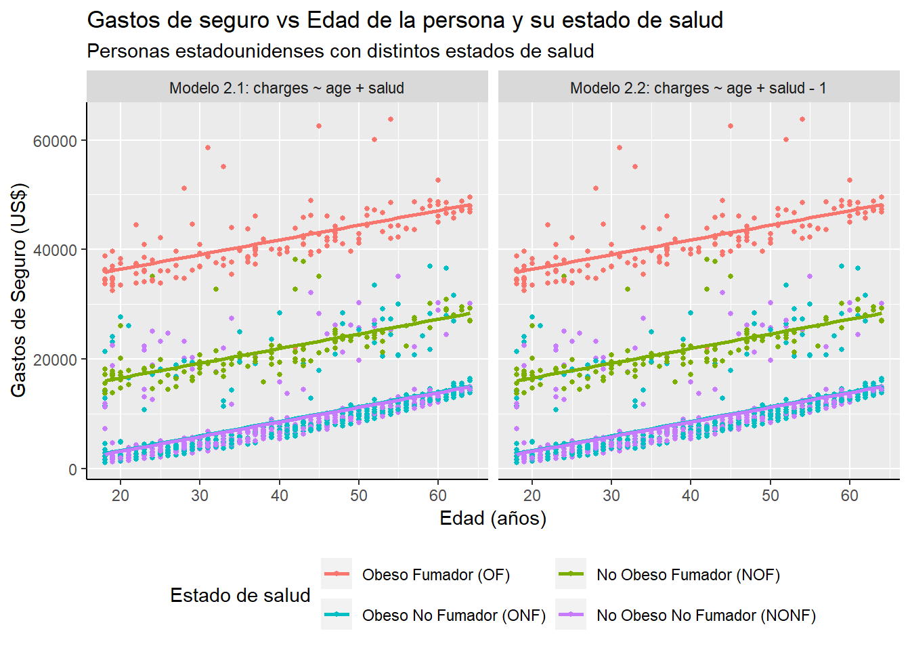

Se desea hacer un modelo lineal simple entre las variables del dataset de seguros registrando la amplitud del efecto en la forma de los coeficientes que acompañana a la o las variables independientes. Para eso se probarán y compararán distintos modelos identificando el mejor de ellos.
Code
# Se importan las librerías necesariaslibrary(tidyverse)library(modelr)library(sjPlot)library(sjmisc)library(sjlabelled)# Directorio de trabajo y nombre de archivodata_folder<-"dataset"file_name<-"Insurance.csv"# Se importa el dataset y se eliminan filas repetidasdf_seguros<-read.csv(file.path(data_folder, file_name), dec=",", stringsAsFactors =TRUE)df_seguros<-unique(df_seguros)# Se agrega la columna saluddf_seguros<-mutate(df_seguros, salud =case_when((bmi>=30&smoker=='yes')~'OF', (bmi>=30&smoker=='no')~'ONF', (bmi<30&smoker=='yes')~'NOF', (bmi<30&smoker=='no')~'NONF'))df_seguros$salud=factor(df_seguros$salud, levels =c("OF", "NOF", "ONF", "NONF"), ordered =TRUE)# Cambia tamaño del plot# options(repr.plot.width=16, repr.plot.height=12)
Limpieza y adecuación de los datos
El dataset provisto posee 7 columnas, con variables categóricas (sexo, fumador, región) y numéricas (edad, índice de masa corporal, hijes, gastos de seguro médico). Se verificó que la importación de los datos sea correcta y se eliminaron filas repetidas. Se agregó 1 nueva columna llamada “salud”:
Salud: considerando la obesidad de una persona como el BMI mayor o igual a 30 y si esta persona es fumadora, separa entre personas Obesas Fumadoras (OF), Obesas No Fumadoras (ONF), No Obesas Fumadoras (NOF) y No Obesas No Fumadoras (NONF).
Modelo lineal simple N° 1
Se realizaron dos variaciones de un modelo lineal simple (ver Figure 1) teniendo en cuenta los gastos de una persona en función de su edad. Se utilizaron las fórmulas:
Modelo 1.1:\(y\) ~ \(x_1\)
Modelo 1.2:\(y\) ~ \(x_1 - 1\)
Reemplazando: \(y = charges,\)\(x_1 = age\).
Code
# Modelo lineal simpleseguros_mod1<-lm(charges~age, data =df_seguros)seguros_mod1_2<-lm(charges~age-1, data =df_seguros)# Agrego prediccionesgrid<-df_seguros%>%data_grid(age, charges)%>%gather_predictions(seguros_mod1, seguros_mod1_2)# Grafico ggplot(df_seguros, aes(x=age))+geom_point(aes(y =charges), size =1)+geom_line(aes(y =pred), data =grid, colour ="red", size =1)+labs( x ='Edad (años)', y ='Gastos de Seguro (US$)', title ='Gastos de seguro vs Edad de la persona', subtitle ='Personas estadounidenses')+theme(axis.line =element_line(colour ="black", size =0.5))+facet_wrap(~model, labeller =labeller(model =c("seguros_mod1"="Modelo 1.1: charges ~ age","seguros_mod1_2"="Modelo 1.2: charges ~ age - 1")))
Se observó que el Modelo 1.2 tiene mejor estimación que el Modelo 1.1 ya que las edades no comienzan en 0; y al suprimir la ordenada al origen del modelo, se obtiene una mejor tendencia. Sin embargo, ninguno de ambos modelos se ajusta debidamente a los datos ya que hay otros factores que influyen en los gastos de una persona como su estado de salud. Las estadísticas de los Modelos 1.1 (ver Table 1) y 1.2 (ver Table 2) demuestran que efectivamente no son ideales.
Table 2: Estadísticas del modelo lineal simple N° 1.2.
charges
Predictors
p
Statistic
Estimates
standardized std. Error
std. Error
std. Beta
age
5.68e-256
43.21
329.33
0.03
7.62
0.30
Observations
1337
R2 / R2 adjusted
0.583 / 0.583
Modelo lineal simple N° 2
Para mejorar la estimación de los gastos, se procede a cambiar el modeloagregando la variable “salud” que posee 4 posibles estados de salud (ver Figure 2). Se utilizan los modelos:
# Modelo lineal simple 2seguros_mod2<-lm(charges~age+salud, data =df_seguros)seguros_mod2_2<-lm(charges~age+salud-1, data =df_seguros)# Agrego prediccionesgrid2<-df_seguros%>%data_grid(age, charges, salud)%>%gather_predictions(seguros_mod2, seguros_mod2_2)# Grafico ggplot(df_seguros, aes(x=age, y =charges, color=salud))+geom_point(size =1)+geom_line(aes(y =pred), data =grid2, size =1)+labs( x ='Edad (años)', y ='Gastos de Seguro (US$)', title ='Gastos de seguro vs Edad de la persona y su estado de salud', subtitle ='Personas estadounidenses con distintos estados de salud', color ='Estado de salud')+scale_color_discrete(labels =c('Obeso Fumador (OF)','No Obeso Fumador (NOF)','Obeso No Fumador (ONF)','No Obeso No Fumador (NONF)'))+theme(legend.position="bottom", axis.line =element_line(colour ="black", size =0.5))+guides(color=guide_legend(nrow=2,byrow=TRUE))+facet_wrap(~model, labeller =labeller(model =c("seguros_mod2"="Modelo 2.1: charges ~ age + salud","seguros_mod2_2"="Modelo 2.2: charges ~ age + salud - 1")))

Figure 2: Modelo lineal simple N° 2 - Gastos vs Edad y Salud.
Se observa que los nuevos modelos tienen mejores estimaciones para los distintos grupos de personas según su estado de salud, siendo mucho mejor el Modelo 2.2 según la comparación de las estadísticas de los modelos (Modelo 2.1, ver Table 3 y Modelo 2.2, ver Table 4).
Table 4: Estadísticas del modelo lineal simple N° 2.2.
charges
Predictors
p
Statistic
Estimates
standardized std. Error
std. Error
std. Beta
age
2.19e-151
29.99
267.72
0.01
8.93
0.31
saludOF
0.00e+00
60.31
31083.83
0.03
515.40
2.34
saludNOF
1.32e-87
21.41
11235.67
0.03
524.89
0.70
saludONF
7.98e-07
-4.96
-2039.70
0.02
411.27
-0.40
saludNONF
3.91e-08
-5.53
-2185.51
0.02
395.41
-0.41
Observations
1337
R2 / R2 adjusted
0.936 / 0.936
Modelo lineal simple N° 3
Se analizó una última serie de modelos (ver Figure 3) para comprobar si pueden mejorar la estimación del Modelo 2.2 (ver Table 4). Se utilizaron las siguientes fórmulas:
# Modelo lineal simple 2seguros_mod3<-lm(charges~age*salud, data =df_seguros)seguros_mod3_2<-lm(charges~age*salud-1, data =df_seguros)# Agrego prediccionesgrid3<-df_seguros%>%data_grid(age, charges, salud)%>%gather_predictions(seguros_mod3, seguros_mod3_2)# Grafico ggplot(df_seguros, aes(x=age, y =charges, color=salud))+geom_point(size =1)+geom_line(aes(y =pred), data =grid3, size =1)+labs( x ='Edad (años)', y ='Gastos de Seguro (US$)', title ='Gastos de seguro vs Edad de la persona y su estado de salud', subtitle ='Personas estadounidenses con distintos estados de salud', color ='Estado de salud')+scale_color_discrete(labels =c('Obeso Fumador (OF)','No Obeso Fumador (NOF)','Obeso No Fumador (ONF)','No Obeso No Fumador (NONF)'))+theme(legend.position="bottom", axis.line =element_line(colour ="black", size =0.5))+guides(color=guide_legend(nrow=2,byrow=TRUE))+facet_wrap(~model, labeller =labeller(model =c("seguros_mod3"="Modelo 3.1: charges ~ age * salud","seguros_mod3_2"="Modelo 3.2: charges ~ age * salud - 1")))
Figure 3: Modelo lineal simple N° 3 - Gastos vs Edad y Salud.
Al no poder visualizar un cambio significativo con respecto al gráfico del Modelo 2.2 (ver Figure 2), se procede a observar las estadísticas (Modelo 3.1 ver Table 5, y Modelo 3.2 ver Table 6.
Table 6: Estadísticas del modelo lineal simple N° 3.2.
charges
Predictors
p
Statistic
Estimates
standardized std. Error
std. Error
std. Beta
age
6.34e-106
23.98
268.72
0.01
11.20
0.31
saludOF
7.27e-133
27.59
30558.13
0.03
1107.51
2.34
saludNOF
4.73e-21
9.58
11503.36
0.03
1201.26
0.70
saludONF
5.11e-04
-3.48
-2015.80
0.02
578.67
-0.40
saludNONF
4.88e-04
-3.50
-2118.37
0.02
605.99
-0.41
age * salud L
6.88e-01
-0.40
-8.75
0.03
21.77
-0.01
age * salud Q
6.66e-01
0.43
9.67
0.03
22.41
0.01
age * salud C
7.36e-01
-0.34
-7.75
0.03
23.03
-0.01
Observations
1337
R2 / R2 adjusted
0.936 / 0.935
Puede verse que el Modelo 3.2 (ver Table 6) tiene muy buenas estimaciones con respecto al Modelo 3.1 (ver Table 5). A su vez, si comparamos los Modelos 2.2 (ver Table 4) y 3.2, se observa que son prácticamente idénticos siendo ligeramente mejor el Modelo 2.2.
Conclusiones
Se decide optar por usar el Modelo 2.2 (ver Figure 2 y Table 4) ya que tiene una mejor estimación para los gastos de las personas según su edad y estado de salud.
Source Code
## Introducción {.unnumbered}Se desea hacer un modelo lineal simple entre las variables del dataset de seguros registrando la amplitud del efecto en la forma de los coeficientes que acompañana a la o las variables independientes. Para eso se probarán y compararán distintos modelos identificando el mejor de ellos.```{r}#| label: setup#| message: false#| echo: true#| warning: false# Se importan las librerías necesariaslibrary(tidyverse)library(modelr)library(sjPlot)library(sjmisc)library(sjlabelled)# Directorio de trabajo y nombre de archivodata_folder <-"dataset"file_name <-"Insurance.csv"# Se importa el dataset y se eliminan filas repetidasdf_seguros <-read.csv(file.path(data_folder, file_name), dec=",", stringsAsFactors =TRUE)df_seguros <-unique(df_seguros)# Se agrega la columna saluddf_seguros <-mutate(df_seguros,salud =case_when((bmi >=30& smoker =='yes') ~'OF', (bmi >=30& smoker =='no') ~'ONF', (bmi <30& smoker =='yes') ~'NOF', (bmi <30& smoker =='no') ~'NONF'))df_seguros$salud =factor(df_seguros$salud, levels =c("OF", "NOF", "ONF", "NONF"), ordered =TRUE)# Cambia tamaño del plot# options(repr.plot.width=16, repr.plot.height=12)```## Limpieza y adecuación de los datosEl dataset provisto posee 7 columnas, con variables categóricas (sexo, fumador, región) y numéricas (edad, índice de masa corporal, hijes, gastos de seguro médico). Se verificó que la importación de los datos sea correcta y se eliminaron filas repetidas. Se agregó 1 nueva columna llamada "salud":- [**Salud:**]{.underline} considerando la obesidad de una persona como el BMI mayor o igual a 30 y si esta persona es fumadora, separa entre personas Obesas Fumadoras (OF), Obesas No Fumadoras (ONF), No Obesas Fumadoras (NOF) y No Obesas No Fumadoras (NONF).## Modelo lineal simple N° 1Se realizaron dos variaciones de un modelo lineal simple (ver @fig-modelo1_simple) teniendo en cuenta los gastos de una persona en función de su edad. Se utilizaron las fórmulas:- [**Modelo 1.1:**]{.underline} $y$ \~ $x_1$- [**Modelo 1.2:**]{.underline} $y$ \~ $x_1 - 1$Reemplazando: $y = charges,$ $x_1 = age$.```{r}#| label: fig-modelo1_simple#| fig-cap: Modelo lineal simple N° 1 - Gastos vs Edad.#| message: false#| echo: true#| warning: false# Modelo lineal simpleseguros_mod1 <-lm(charges ~ age, data = df_seguros)seguros_mod1_2 <-lm(charges ~ age -1, data = df_seguros)# Agrego prediccionesgrid <- df_seguros %>%data_grid(age, charges) %>%gather_predictions(seguros_mod1, seguros_mod1_2)# Grafico ggplot(df_seguros, aes(x=age)) +geom_point(aes(y = charges), size =1) +geom_line(aes(y = pred), data = grid, colour ="red", size =1) +labs(x ='Edad (años)',y ='Gastos de Seguro (US$)',title ='Gastos de seguro vs Edad de la persona',subtitle ='Personas estadounidenses') +theme(axis.line =element_line(colour ="black", size =0.5)) +facet_wrap(~model, labeller =labeller(model =c("seguros_mod1"="Modelo 1.1: charges ~ age","seguros_mod1_2"="Modelo 1.2: charges ~ age - 1")))```Se observó que el Modelo 1.2 tiene mejor estimación que el Modelo 1.1 ya que las edades no comienzan en 0; y al suprimir la ordenada al origen del modelo, se obtiene una mejor tendencia. Sin embargo, ninguno de ambos modelos se ajusta debidamente a los datos ya que hay otros factores que influyen en los gastos de una persona como su estado de salud. Las estadísticas de los Modelos 1.1 (ver @tbl-stats_modelo1.1_simple) y 1.2 (ver @tbl-stats_modelo1.2_simple) demuestran que efectivamente no son ideales.```{r}#| label: tbl-stats_modelo1.1_simple#| tbl-cap: Estadísticas del modelo lineal simple N° 1.1.#| message: false#| echo: true#| warning: false# Estadísticas del modelotab_model(seguros_mod1,show.se =TRUE,show.std =TRUE,show.stat =TRUE,col.order =c("p", "stat", "est", "std.se", "se", "std.est"), p.style ="scientific", digits.p =2)``````{r}#| label: tbl-stats_modelo1.2_simple#| tbl-cap: Estadísticas del modelo lineal simple N° 1.2.#| message: false#| echo: true#| warning: false# Estadísticas del modelotab_model(seguros_mod1_2,show.se =TRUE,show.std =TRUE,show.stat =TRUE,col.order =c("p", "stat", "est", "std.se", "se", "std.est"), p.style ="scientific", digits.p =2)```## Modelo lineal simple N° 2Para mejorar la estimación de los gastos, se procede a cambiar el modeloagregando la variable "salud" que posee 4 posibles estados de salud (ver @fig-modelo2_simple). Se utilizan los modelos:- [**Modelos 2.1:**]{.underline} $y$ \~ $x_1 + x_2$- [**Modelos 2.2:**]{.underline} $y$ \~ $x_1 + x_2 - 1$Reemplazando: $y = charges,$ $x_1 = age,$ $x_2 = salud$.```{r}#| label: fig-modelo2_simple#| fig-cap: Modelo lineal simple N° 2 - Gastos vs Edad y Salud.#| message: false#| echo: true#| warning: false# Modelo lineal simple 2seguros_mod2 <-lm(charges ~ age + salud, data = df_seguros)seguros_mod2_2 <-lm(charges ~ age + salud -1, data = df_seguros)# Agrego prediccionesgrid2 <- df_seguros %>%data_grid(age, charges, salud) %>%gather_predictions(seguros_mod2, seguros_mod2_2)# Grafico ggplot(df_seguros, aes(x=age, y = charges, color=salud)) +geom_point(size =1) +geom_line(aes(y = pred), data = grid2, size =1) +labs(x ='Edad (años)',y ='Gastos de Seguro (US$)',title ='Gastos de seguro vs Edad de la persona y su estado de salud',subtitle ='Personas estadounidenses con distintos estados de salud',color ='Estado de salud') +scale_color_discrete(labels =c('Obeso Fumador (OF)','No Obeso Fumador (NOF)','Obeso No Fumador (ONF)','No Obeso No Fumador (NONF)')) +theme(legend.position="bottom", axis.line =element_line(colour ="black", size =0.5))+guides(color=guide_legend(nrow=2,byrow=TRUE))+facet_wrap(~model, labeller =labeller(model =c("seguros_mod2"="Modelo 2.1: charges ~ age + salud","seguros_mod2_2"="Modelo 2.2: charges ~ age + salud - 1")))```Se observa que los nuevos modelos tienen mejores estimaciones para los distintos grupos de personas según su estado de salud, siendo mucho mejor el Modelo 2.2 según la comparación de las estadísticas de los modelos (Modelo 2.1, ver @tbl-stats_modelo2_simple y Modelo 2.2, ver @tbl-stats_modelo2_2_simple).```{r}#| label: tbl-stats_modelo2_simple#| tbl-cap: Estadísticas del modelo lineal simple N° 2.1.#| message: false#| echo: true#| warning: false# Estadísticas del modelotab_model(seguros_mod2, show.se =TRUE,show.std =TRUE,show.stat =TRUE,col.order =c("p", "stat", "est", "std.se", "se", "std.est"), p.style ="scientific", digits.p =2)``````{r}#| label: tbl-stats_modelo2_2_simple#| tbl-cap: Estadísticas del modelo lineal simple N° 2.2.#| message: false#| echo: true#| warning: false# Estadísticas del modelotab_model(seguros_mod2_2, show.se =TRUE,show.std =TRUE,show.stat =TRUE,col.order =c("p", "stat", "est", "std.se", "se", "std.est"), p.style ="scientific", digits.p =2)```## Modelo lineal simple N° 3Se analizó una última serie de modelos (ver @fig-modelo3_simple) para comprobar si pueden mejorar la estimación del Modelo 2.2 (ver @tbl-stats_modelo2_2_simple). Se utilizaron las siguientes fórmulas:- [**Modelos 3.1:**]{.underline} $y$ \~ $x_1 * x_2$- [**Modelos 3.2:**]{.underline} $y$ \~ $x_1 * x_2 - 1$Reemplazando: $y = charges,$ $x_1 = age,$ $x_2 = salud$.```{r}#| label: fig-modelo3_simple#| fig-cap: Modelo lineal simple N° 3 - Gastos vs Edad y Salud.#| message: false#| echo: true#| warning: false# Modelo lineal simple 2seguros_mod3 <-lm(charges ~ age * salud, data = df_seguros)seguros_mod3_2 <-lm(charges ~ age * salud -1, data = df_seguros)# Agrego prediccionesgrid3 <- df_seguros %>%data_grid(age, charges, salud) %>%gather_predictions(seguros_mod3, seguros_mod3_2)# Grafico ggplot(df_seguros, aes(x=age, y = charges, color=salud)) +geom_point(size =1) +geom_line(aes(y = pred), data = grid3, size =1) +labs(x ='Edad (años)',y ='Gastos de Seguro (US$)',title ='Gastos de seguro vs Edad de la persona y su estado de salud',subtitle ='Personas estadounidenses con distintos estados de salud',color ='Estado de salud') +scale_color_discrete(labels =c('Obeso Fumador (OF)','No Obeso Fumador (NOF)','Obeso No Fumador (ONF)','No Obeso No Fumador (NONF)')) +theme(legend.position="bottom", axis.line =element_line(colour ="black", size =0.5))+guides(color=guide_legend(nrow=2,byrow=TRUE))+facet_wrap(~model, labeller =labeller(model =c("seguros_mod3"="Modelo 3.1: charges ~ age * salud","seguros_mod3_2"="Modelo 3.2: charges ~ age * salud - 1")))```Al no poder visualizar un cambio significativo con respecto al gráfico del Modelo 2.2 (ver @fig-modelo2_simple), se procede a observar las estadísticas (Modelo 3.1 ver @tbl-stats_modelo3_simple, y Modelo 3.2 ver @tbl-stats_modelo3_2_simple.```{r}#| label: tbl-stats_modelo3_simple#| tbl-cap: Estadísticas del modelo lineal simple N° 3.1.#| message: false#| echo: true#| warning: false# Estadísticas del modelotab_model(seguros_mod3, show.se =TRUE,show.std =TRUE,show.stat =TRUE,col.order =c("p", "stat", "est", "std.se", "se", "std.est"), p.style ="scientific", digits.p =2)``````{r}#| label: tbl-stats_modelo3_2_simple#| tbl-cap: Estadísticas del modelo lineal simple N° 3.2.#| message: false#| echo: true#| warning: false# Estadísticas del modelotab_model(seguros_mod3_2, show.se =TRUE,show.std =TRUE,show.stat =TRUE,col.order =c("p", "stat", "est", "std.se", "se", "std.est"), p.style ="scientific", digits.p =2)```Puede verse que el Modelo 3.2 (ver @tbl-stats_modelo3_2_simple) tiene muy buenas estimaciones con respecto al Modelo 3.1 (ver @tbl-stats_modelo3_simple). A su vez, si comparamos los Modelos 2.2 (ver @tbl-stats_modelo2_2_simple) y 3.2, se observa que son prácticamente idénticos siendo ligeramente mejor el Modelo 2.2.## ConclusionesSe decide optar por usar el Modelo 2.2 (ver @fig-modelo2_simple y @tbl-stats_modelo2_2_simple) ya que tiene una mejor estimación para los gastos de las personas según su edad y estado de salud.